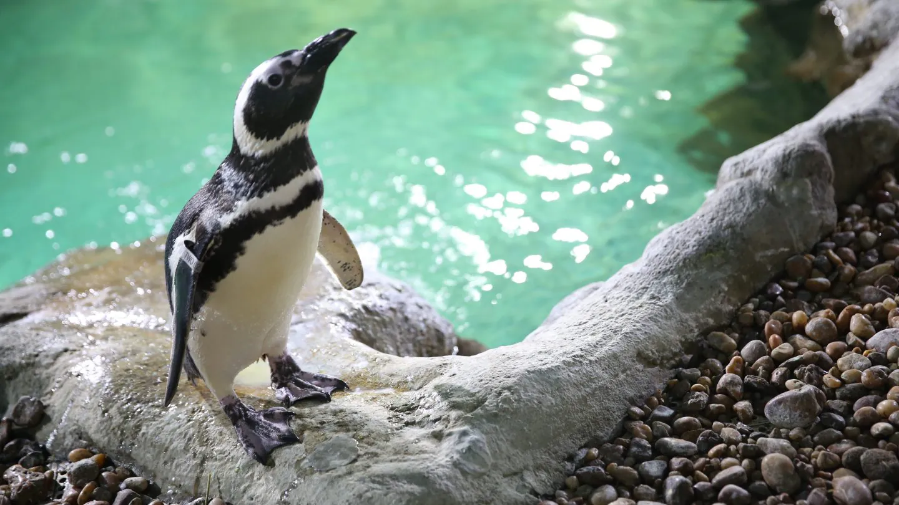

Descubra quais pontos turisticos estão mais
proximos de você!
Por que acessibilidade
importa?
Acessibilidade é garantir que todas as pessoas tenham as mesmas oportunidades de participar, aproveitar e se expressar na cultura e no lazer.
Destaques acessíveis

Aquário de São Paulo
Zona Sul
Acessível para cadeirantes, com recursos sensoriais e audiodescrição.

Parque Ibirapuera
Zona Sul
Rampas, banheiros acessíveis, cadeiras anfíbias e bicicletas adaptadas.

Pinacoteca de São Paulo
Centro
Elevadores, recursos táteis e visitas mediadas inclusivas.